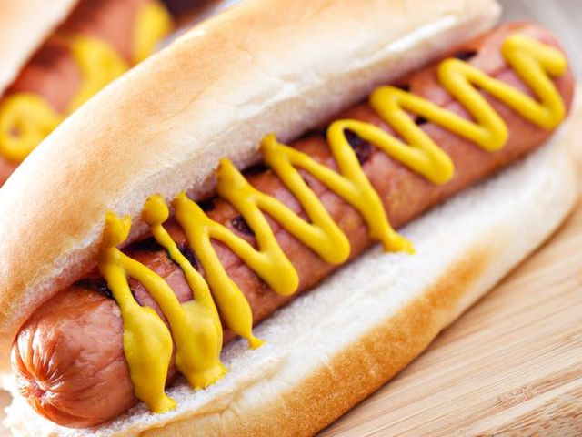

Hot Dog

Description
The Hot Dog is a staple in American cuisine. It is made simply by placing a pork or beef sausage inside of a Hot Dog bun and adding whatever toppings you desire.
Ingredients
- Pork or Beef Sausage
- Hot Dog Bun
- Your choice of toppings. For example Cheese, Mustard, or Katchup
Steps
- Set Grill to medium, and grill your sausage of choice. Slowly turn your dogs for 5 to 7 minutes or until slightly charred and cooked through.
- Toast your buns on the grill to a desired amount.
- Place your sausage inside your bun and add toppings of your choice.